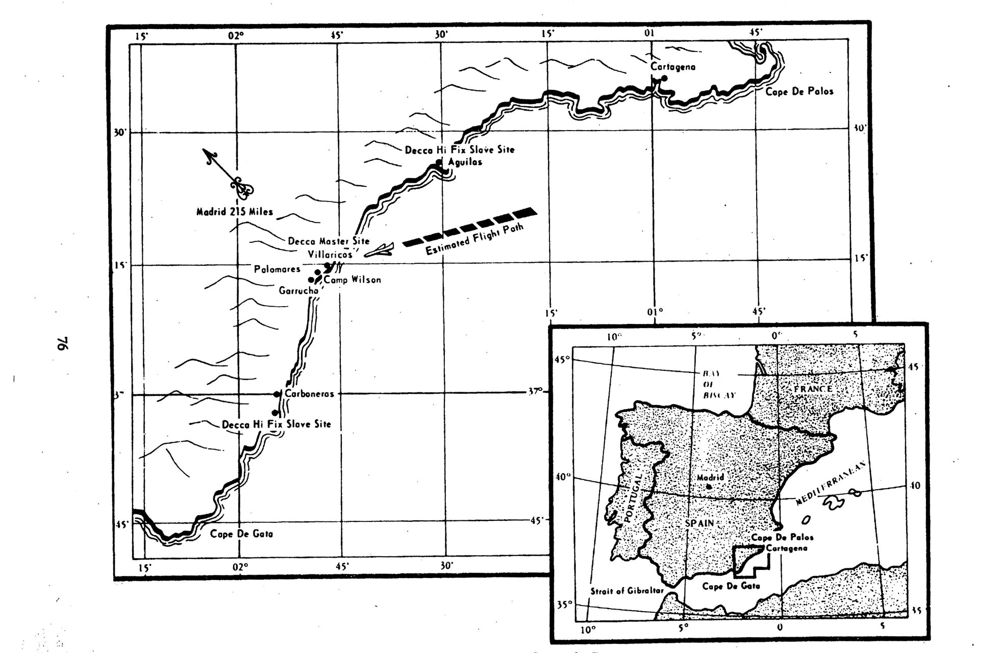
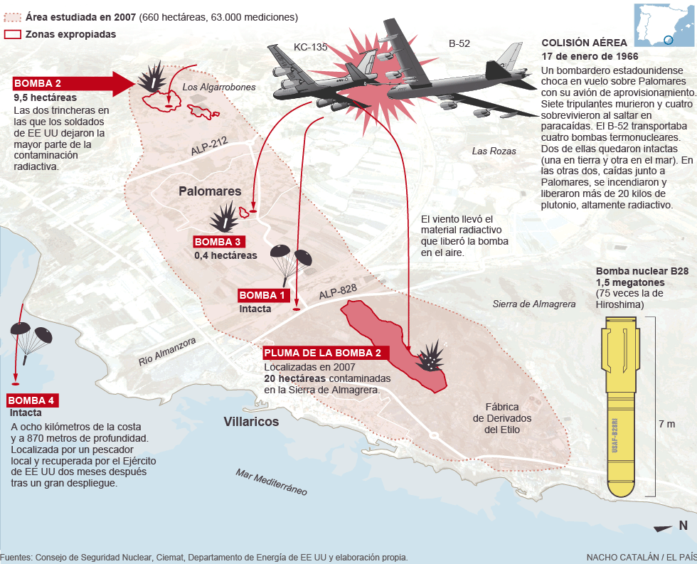

El transcurrir de los días en la localidad almeriense de palomares, hasta el 17 de enero de 1966, eran apacibles y soleados. Como todo pueblo de la España humilde de la posguerra, el día a día consistía en cultivar las huertas, sacar el ganado a que paciera a las tierras cercanas, pescar en pequeñas embarcaciones y esconderse del sol de justicia que achicharra esas tierras. Pero ese día, el lunes 17 de enero de 1966, Palomares se convirtió en el epicentro de la guerra fría que libraban la extinta Unión Soviética y los todopoderosos Estados Unidos.
Esa mañana, un bombardero B-52 cargado con 4 bombas termonucleares se incendió en el aire debido a un error en la operación de repostaje aéreo que realizaba frente a la costa de la citada localidad almeriense. Las consecuencias de ese accidente aéreo fueron los fallecimientos de 3 de los tripulantes del B-52 y los pilotos del avión cisterna y la "pérdida" de 4 bombas termonucleares.

En resumidas cuentas, Palomares se convirtió, de la noche a la mañana, en el lugar más peligroso del mundo y todo ello sin que las autoridades militares y políticas, ni norteamericanas ni españolas, dieran información alguna a la población. Para ayudaros a entender qué sucedió exactamente prestad atención a la siguiente infografía realizada por Ignacio Catalán López para el diario El Pais.
